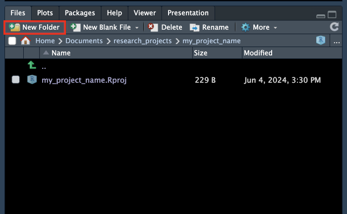
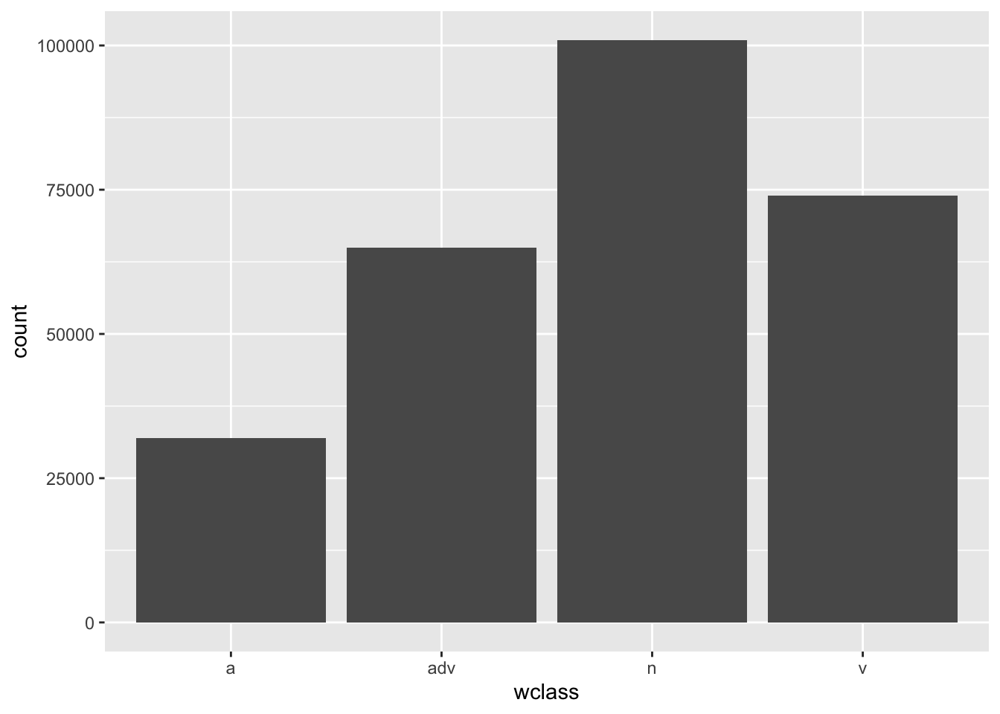
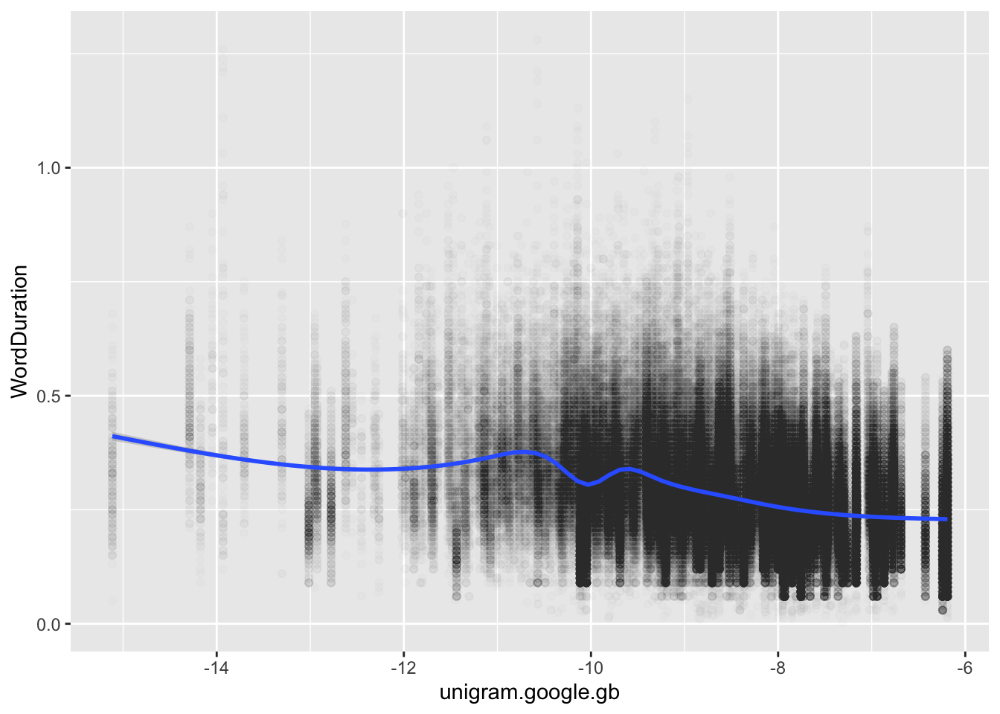

So far, the approach taken in these workshops has been detached from the actual work of data analysis in linguistics and allied fields.
We have learnt enough now that we can start to approach more ‘real world’ data analysis examples. From here on out, new material will be illustrated with actual problems.
The primary aim of this session is what it says on the tin, namely, to introduce exploratory data visualisation. This is one of the most important skills for data analysis. We will particularly focus on the ggplot2 package from the tidyverse.
The secondary aim of this session is to introduce some basic R and open science infrastructure, and a particular research area, which will follow us through this and future sessions. We will be exploring the effect on word duration of ‘word usage factors’, such as word frequency, where in a sentence the word typically appears, how likely the word is in a context.
Before we turn to ggplot2, we will need to orient ourselves with respect to this secondary aim.
3.2 Start a New RStudio Project
RStudio projects are one of the primary ways to organise a data analysis project in the R ecosystem. They enable the integration of data files, R scripts, and supplementary materials. Ideally, you can share the entire project online along with any publications.1
To create a new RStudio project in RStudio:
Go to File > New Project
Select ‘New Directory’ and then ‘New Project’
Use the Browse... button to choose a directory for the project (you might have to create a new one). For instance, Documents/research_projects/ then enter a name for the project directory in the Directory name box (Figure 3.1).
We will look at the use of renv in the near future.
For now, we need to populate our project with a sensible collection of folders/directories. You will have your own ideas about the best way to do this. For our current purposes, I’ll insist on three: data, plots, and markdown.
How do you create these? You can do it using the file browser which comes with your operating system or from inside the RStudio window in the output pane (recall: at the bottom right of your RStudio window). There is a New Folder bottom at the top of the Files tab.

Figure 3.2: Files tab of Output pane with ‘New Folder’ button highlighted.
3.2.1 Create a Quarto Markdown Document
We want a sharable record of our data analysis journey. The ideal format for this is one which enables us to both set out the code we used and explain the project to our fellow researchers. Markdown is an ideal format for this.
Markdown is a markup language, like HTML or LaTeX, which aims at human readability. Quarto is a publishing platform for converting markdown documents into html files (which can be viewed in a web browser and/or hosted online for anyone to view), pdf files (via LaTeX), or even Word files. The materials you are reading now were produced in RStudio using Quarto Markdown.
You are likely to head about RMarkdown. Quarto is a successor to RMarkdown which is less tied to R. It can be used just as easily with Python or Julia (other programming languages used for data analysis). With very few exceptions, RMarkdown files work with Quarto. One difference you are likely to notice is that the names of RMarkdown files end in .Rmd and the names of Quarto files end in .qmd.
Create a new Quarto Document using File > New File > Quarto Document.... This will open another box where you can enter the name of the file and your author details.
Figure 3.3: The New Quarto Document window.
You should enter some variant of “Data Exploration” into the Title: field and, if you like, add your name in Author:. Select HTML from the options available and leave everything else as it is. Press Create.3
The default Quarto document will appear in front of you in the source pane. Save this file (Ctrl + S or Cmd + S), placing it in the markdown directory. Give it a sensible name like data_exploration.qmd.
Quarto documents have two main sections. At the top, you get the YAML header. This sets global options for the document. The YAML header for the default quarto document is very small:
---
title: "data_exploration"
format: html
---
Quarto is installed with RStudio now. Check that your Quarto installation is working properly by pressing Render on the tool bar at the top of the source pane (or Ctrl/Cmd + Shift + k).
If successful, your web browser should open with a fairly boring looking document.
Here are the YAML header settings I tend to use (assuming you already have title and author specified):
The actual content appears in the body of the Quarto document. In Markdown we use # signs for section headings. Usually, the sections in an html document will start with ##. If you want a subsection (i.e., a section within a section) use ###, if you want a subsubsection use #### etc etc. You will also see code blocks. These start and end with three backticks (```). The language used inside the block is given inside curly brackets (e.g. {r}).
Options to control the block appear as special comments (e.g. #| echo: false) in the second code block, which means the block will be hidden in the rendered document (but will run in the background). It is often useful to use #| eval: false, which prevents a block from being run when the document is rendered. This is helpful in situations where there is a code block which takes a long time to run.
There are many good tutorials on Quarto and Markdown available online. If you like videos, I recommend:
Have a look at the reference page for HTML documents in Quarto. This tells you all the options that can go in the YAML header. It’s worth bookmarking this page.
Answer the following questions by looking at the reference document and experimenting by changing options and re-rendering.
The code options control some of the behaviour of code blocks.
What option would you use to ‘fold’ all code blocks (i.e., create a document in which you have to click to show any code blocks)?
The figures options help to control the output of plots. These are often useful.
I want all figures to be aligned in the centre of the page, how should I finish the following in my YAML header: fig-align: .
Frustratingly, the default unit for figures generated by code blocks is inches. The defaults for each format are here
Say I want the width of all my figures to be 8 inches rather than 7, complete the following entry in my YAML header: :
What option should I use with df-print to produce paged tables (i.e., tables which allow you divide table output into multiple pages)? .
3.3 Word Duration and Usage Factors
We need some data to explore. There is no shortage of data from previous studies for us to look at thanks to the increased takeup of open science practices.
We’re going to explore data from Sóskuthy and Hay (2017). Sóskuthy and Hay investigate variation in the duration of words. That is, the time, in seconds, that it takes to pronounce a word. They replicate a series of effects already reported in the literature in which ‘usage factors’, such as how frequent the word is, how often it is at the end of an utterance, and how predictable it is from the surrounding words, affect word duration. For instance, the more predictable a word is from its context, the shorter it is likely to be.
Sóskuthy and Hay then go on to find evidence that changes in these word usage factors affect word duration over the course of the 100+ years represented in the Origins of New Zealand English (ONZE) corpus. The explanation of this requires some kind of feedback between the production of words and the perception of words and this has significant consequences for how changes in language over time are understood.
In this chapter, we will use ggplot2, and some of the skills learned in previous chapters, to explore the data used in this paper. We will go on, in later chapters, to pre-register an analysis on the basis of this paper but applied to a different data set.
We need the data from Sóskuthy and Hay (2017). We can get it from the osf.io repository for the paper, here: https://osf.io/q5wgh/.
Have a look around the osf.io page. There are four files in the “Files” section of the page. What are they?
Download the big_dia.csv file and put it in the data directory in your R project. The download button is a little hard to spot. The big download icon on the right is to download the file’s metadata. Instead, you should select the small ‘hamburger menu’ button and then Download file (Figure 3.4).
Figure 3.4: Hamburger menu and download button on osf.io.
3.4 Getting Started with ggplot2
3.4.1 Load packages and data
At the top of your Quarto Document, add a code block which loads the required packages. A convenient way to do this is to use the keyboard shortcut (Windows and Linux: Ctrl + Alt + I, macOS: Cmd + Option + I).
library(tidyverse)
── Attaching core tidyverse packages ──────────────────────── tidyverse 2.0.0 ──
✔ dplyr 1.1.4 ✔ readr 2.1.5
✔ forcats 1.0.0 ✔ stringr 1.5.1
✔ ggplot2 3.5.2 ✔ tibble 3.3.0
✔ lubridate 1.9.4 ✔ tidyr 1.3.1
✔ purrr 1.1.0
── Conflicts ────────────────────────────────────────── tidyverse_conflicts() ──
✖ dplyr::filter() masks stats::filter()
✖ dplyr::lag() masks stats::lag()
ℹ Use the conflicted package (<http://conflicted.r-lib.org/>) to force all conflicts to become errors
library(here)
here() starts at /Users/jbl91/UC Enterprise Dropbox/Joshua Wilson Black/teaching/statistics_workshops
Have a look at the output of this code block. It tells you which packages are included in the ‘core tidyverse packages’ and which version you are loading. Note that ggplot2 is included among them. A set of ‘conflicts’ follow: these are all of the form x masks y. The first of these is ✖ dplyr::filter() masks stats::filter(). This means that the name filter() previously referred to a function in the stats package called filter(), but now refers to the function of the same name from dplyr. Keep an eye out for clashes between packages in terms of function names.
The package here then tells you where ‘here’ is. This should be the directory in which your R project is stored.
Then load the data from your data directory.
big_dia <-read_csv(here('data', 'big_dia.csv'))
New names:
Rows: 271764 Columns: 30
── Column specification
──────────────────────────────────────────────────────── Delimiter: "," chr
(7): TargetOrthography, foll_wf, prev_wf, Speaker, Corpus, TargetPhonem... dbl
(20): ...1, YOB, WordDuration, dur.context, dur.context.avg, prev_pred_w... lgl
(3): repeated.20, initial, final
ℹ Use `spec()` to retrieve the full column specification for this data. ℹ
Specify the column types or set `show_col_types = FALSE` to quiet this message.
• `` -> `...1`
The output of this function tells us how read_csv() has interpreted the columns in the data file, how many rows there are, and any names which it has created for the columns: chr means the column contains text strings, dbl means it carries numbers, and lgl means it carries TRUE or FALSE values.4
It is a good idea to have a look in this data by using the RStudio viewer (Recall: View(big_dia) or double click big_dia in the environment pane.)
Run spec(big_dia) in your console and look at the output. Identify the types of the following columns:
wclass:
seg.no:
foll_pred_wf_log:
repeated.20:
TargetPhonemes:
3.4.2 The ‘grammar of graphics’
We’re almost at some actual code. The package ggplot2 is the kind of package where it is helpful to know something about the underlying design principles.
The gg in ggplot2 stands for “Grammar of Graphics”. It is an implementation, by Hadley Wickham, of the philosophy of data visualisation developed in (Wilkinson 1999).
What is the ‘grammar’?
…a statistical graphic is a mapping from data to aesthetic attributes (colour, shape, size) of geometric objects (points, lines, bars). The plot may also contain statistical transformations of the data and is drawn on a specific coordinate system{.red}. (Wickham 2016, 4, emphasis mine)
In order, a plot is made up of:
Data
each observation has a row,
each variable has a column.
‘Aesthetic mappings’
From columns to a visual property.
e.g. age category will be represented by colour,
e.g. height will be represented by position on the x axis.
Layers
The elements of the plot you actually see.
Geometrical objects (geoms) display the data.
Statistical transformations (stats), provide a visual summary.
Scales and coordinates
Scales specify the aesthetic mapping.
e.g. use this shade of blue to represent the age category “25–34”.
Coordinates determine the axes of the plot.
Facets
Facets allow us to divide the data into groups and plot them separately.
e.g. we plot participants from Christchurch and from Otago in different ‘facets’.
Theme
The theme determines additional visual details of the plot, e.g., font size and background colour.
The code for a ggplot2 plot builds up a graphic, layer by layer, ideally following the above order.
Let’s illustrate this with some actual examples.
3.4.3 One-Dimensional Plots
Often, we want to understand the distribution of a particular variable. Often errors in the data are picked up when we notice something strange in the distribution of values that a variable takes. Usually, these plots will not appear in a paper, but are important for ensuring that our data is what we think it is.
So, let’s look at some ways to visualise this. Starting with continuous variables. This is what a histogram looks like in ggplot2:
A histogram divides a continuous variable up into a series of ‘bins’, then counts the number of rows where the value of the variable falls within the bin.
We can change the bin very simply by adding the bin argument to geom_histogram(). The default number of bins is 30. The appropriate number of bins depends on the specifics of the data. Play around a bit.
If you increase the number of bins, you can start to see influence of rounding (the gaps between values here).
Let’s zoom out and think a bit more about the ‘grammar’ of graphics introduced in the previous section. The code starts with the data frame. This is then ‘piped’ in to the ggplot() function. The mapping argument to ggplot() is used to specify the aesthetic mapping between the data and any geometrical objects in the plot. In this case, the only mapping we specify is that position on the \(x\)-axis is mapped to the value of the variable named WordDuration. Finally, we add a ‘geom’, that is, a geometrical object, which will appear on the plot. There are many geoms available, in this case we use geom_histogram().5 The other features of the ‘grammar’ are dealt with by sensible defaults.
Warning
Functions in ggplot2 are connected with the + sign rather than a pipe (|> or %>%). This is a common source of errors.
Plot some histograms of other continuous variables in the data.
What other ‘aesthetic features’ do these histograms have? Two are worth mentioning here: colour (color if you prefer) and fill. colour controls the colour of the lines on the plot, whereas fill determines the colour which fills the bars. We add aesthetic mappings within the aes() function. Colours are often useful for adding a factor variable to a plot. In this case, we could add fill = Corpus as an argument to the aes() function. This adds a mapping between the Corpus variable in the data (one of three corpora which this data is taken from) and the fill of the bars. To make this more visible, we will reduce the number of bins.
Figure 3.7: Histogram with 30 bins and fill for corpus.
The aes() function establishes the mapping between the colour of the bars in this histogram, but it does not specify which colours are mapped to which values in the data frame. For this we need a scale. Here, we will use scale_fill_manual() and some HTML colour codes.6
Figure 3.8: Histogram with 30 bins and fill for corpus. Colour has been specified with a scale function.
We can use the same code, but swap out the geom. What if we want to know the density rather than the raw counts. That is, what if we don’t care about exactly how many rows appear between the durations 0.1 and 0.2 (for instance), but instead care what proportion of the rows appear in that area. In this case, we have corpora with different raw sizes. Their difference in height in the histogram might not be particularly interesting to us. In this case, the geom_density() function is useful.
Figure 3.9: Density plot with colour and fill for corpus. Both fill and colour specified with a scale function. Transparency increased.
Now the difference in size between the (sub)corpora is gone. We can see that the modal duration value for the CC corpus (which happens to be the most recent one), is lower than for the older corpora. Visually, it looks like the reduction in mode probably something like 0.05 lower for the CC corpus.
At the ggplot2 code level, note that inclusion of a new aesthetic mapping: the Corpus variable is now also mapped to colour. Note that this requires the addition of an additional scale_... function. Finally, note that I control an aesthetic feature of the density geom without mapping it to some feature of the data. Sometimes it is useful to control the aesthetic features of a plot without mapping them to data. In this case, I add alpha = 0.2 to the geom_density() function. The alpha argument controls how transparent a geom is. Finally, note that I’ve stopped explicitly writing mapping = before aes().
What if we want to look at the distribution of a factor variable? Here, a close relative of geom_histogram() is useful: geom_bar().
big_dia |>ggplot(aes(x = wclass ) ) +geom_bar()

Figure 3.10: Simple bar plot.
Add an aesthetic mapping using colour or fill to the previous plot. This should work is exactly the same way as worked for geom_histogram() above.
3.4.4 Two-Dimensional Plots
We have already started adding multiple variables in the plots above (by using colour in addition to position on the \(x\)-axis). Now, we go into the two dimensional situation in more detail. Here we want to see relationships between two variables.
The most obvious example is the scatter plot. Let’s look at change in word duration given word frequency by mapping one variable to the \(x\)-axis and another to the \(y\)-axis. I’ll use a few other tricks which we have already discussed as well.
Figure 3.11: Scatter plot of word frequency and length.
Yikes, this looks like a bit of a sad slug. This is often the case in the social sciences, where effects sizes are quite small. Note also the vertical lines, these are likely all of the instances of a given word in the data frame (i.e., a series of readings for which the unigram frequency is the same but, because they are different instances of the same word, the duration is different).
Often R functions are demonstrated using an inbuilt function with measurements from various cars called mtcars. Here is a plot of the fuel economy of a set of cars (on the \(y\)-axis) with their horsepower() along the \(x\)-axis). The more power a car has, the less likely it is to be very fuel efficient.
Figure 3.12: Scatter plot of horsepower and miles per gallon from built-in mtcars data frame.
With a handful of plots and a clear physical relationship, things look a bit more understandable. I mention this just to note that not every scatter plot is a hairy slug.
With scatter plots, it is often useful to plot a trend line of some sort. This can be done with geom_smooth().
`geom_smooth()` using method = 'gam' and formula = 'y ~ s(x, bs = "cs")'

Figure 3.13: Scatter plot of word frequency (x-axis) and word duration (y-axis) with GAM smooth.
The geom_smooth() function, by default, fits a GAM model or a LOESS smooth (depending on the number of data points). A message is output with the plot which tells you what the smooth is. You can insist on a straight trend line by using the argument method = "lm".
It looks like, as predicted by previous literature, increased word frequency comes along with reduced word duration. Actually demonstrating this requires modelling which controls for other sources in variation. We might also think a bit about where this big thick line around \(-10\) on the \(x\)-axis comes from! It creates a ‘notch’ in the smooth line.
The final plot type we will look at is the violin plot (with geom_violin()). This is useful when we have a continuous variable and a factor variable. The following plot uses geom_violin() to plot the word duration of words at the end of an utterance vs. not at the end of an utterance.
Figure 3.14: Violin plot of word duration divided by utterance finality. Bars indicate the 0.05, 0.5, and 0.95 quantiles of the word duration distribution.
The \(x\)-axis is now divided between TRUE and FALSE, i.e., whether a word is at the end of an utterance or not. We see that this distribution of word duration has a higher centre when the word is at the end of an utterance. This is brought our more strongly by adding lines at the 0.5 quantile (that is, the median, the middle value), and the identifying the extreme tails of the distribution by drawing a line at the 0.05 quantile (i.e. the value which divides the bottom 5% of the distribution from the rest) and the 0.95 quantile. The pattern here is also one which we would expect given the literature on word duration.
3.4.5 Themes and Saving Plots
The current plots are not ‘production ready’. This is not a big deal as we are primarily interested in plots for our own purposes during data analysis. However, it is worth talking a bit about themes and labelling.
Figure 3.15: Violin plot of word duration divided by utterance finality. Bars indicate the 0.05, 0.5, and 0.95 quantiles of the word duration distribution. Labels and theme modified.
Here I have changed the theme using a theme_... function.7 Many visual details can be controlled by theming functions and these are highly customisable. Often little features like, for instance, rotating labels on the axes, are dealt with by theming functions.
I have also added a series of more informative axis labels using the labs() function. In addition to setting a title (with title =), I use the names of the aesthetic features used inside the aes function to control the labels.
The theme_set() function can be used to change the theme of allggplot2 plots in an R sessions. I almost always add theme_set(theme_bw()) to the first block of my markdown files (along with the loading of libraries and data). Try this, and see what happens when you run the markdown from the start. All plots, apart from those which have had the theme manually specified, should have changed.
Look up the prismatic library and its tools for controlling colour. There is a particularly useful function called check_color_blindness() which helps to determine if a collection of colours you have chosen works for different forms of colour blindness.
How do we get plots out of our Markdown? The best approach is to use ggsave(). ggsave() lets us specify a location to save our plot and various details of format and image quality which may be specified by a journal or other publisher. Using ggsave() is easiest if we save our plot to a variable. The following code saves a plot to a variable, outputs it to our plots directory.
violin_plot <- big_dia |>ggplot(aes(x = final,y = WordDuration ) ) +geom_violin(draw_quantiles =c(0.05, 0.5, 0.95),alpha =0.3 ) +labs(title ="Word duration by utterance finality",x ="Word is utterance final",y ="Word duration (seconds)" ) +theme_bw()ggsave(filename =here("plots", "violin_plot.png"), # format is controlled by the file name.plot = violin_plot,units ="mm", # unit determines what `width` and `height` meanwidth =80,height =100,dpi =300# 'dots per inch', i.e., resolution.)
If you want the plot to also appear in the markdown document, as the previous plots have, then simply write the variable name as the last line in the code block.
3.4.6 Plots in Markdown Documents
You will notice in the above that there are figure numbers and figure captions under the plots. These are created with code block options. In Quarto, these looks like the following, and appear as the first lines of a code block:
#| label: fig-violin-plot
#| fig.cap: An informative figure caption.
You can make figure captions appear across multiple lines in your code as follows:
#| label: fig-violin-plot
#| fig.cap: |
#| An even longer and more informative figure caption which
#| has to appear across multiple lines.
The label is a label used to refer to the code block and any output. You can use these labels to generate references to plots in the text of your document using the @ sign. So, for instance, the scatter plot above has the label fig-scatter-smooth. If I write @fig-scatter-smooth, the following will appear in the markdown text: Figure 3.13. Figure labels must start with fig- for this to work.
In RMarkdown, these options appear in the curly brackets, separated by commas. That is, they look like this: {r fig-violin-plot, fig.cap = "my caption..."}.
3.4.7 Final Thoughts on Exploratory Data Visualisation
Always plot your data. You have an incredible capacity to see problems in data when it is appropriately plotted. Visualisation can help you to see all sorts of errors which might arise.
In particular, if you know enough to formulate an interesting research question, you know enough to identify if your data is way outside of the range in which it should be.
This is what ‘exploratory data visualisation’ is all about.
One potential trap is worth mentioning: it is important to avoid loading in an unfamiliar data set, hunting for an interesting looking relationship between the variables in the data, and then proceeding as though this relationship was what you were looking for in the first place! If you found the relationship by poking around with some visualisation methods, then you are engaged in exploratory rather than confirmatory research.
Sóskuthy, Márton, and Jennifer Hay. 2017. “Changing Word Usage Predicts Changing Word Durations in New Zealand English.”Cognition 166 (September): 298–313. https://doi.org/10.1016/j.cognition.2017.05.032.
Often, in practice, one shares a tidied version of a project without a full history. Perhaps, for instance, your ‘in-house’ data analysis uses the names of participants whereas your public release of data and code has to be anonyimised. There are advantages to getting to the ‘fit for public consumption’ phase as soon as possible and sharing as much of the history of the project as is feasible. I have, so far, failed to live up to this advice myself.↩︎
If you want to keep your current work in RStudio open, then tick the small box in the bottom left (Open in new session). This will open the project in a new RStudio window.↩︎
You may want to experiment with the ‘visual markdown editor’. I always use the source editor, but you may find the visual editor more user friendly. You can always switch between the two later.↩︎
The strings chr, dbl, and lgl will be more clear in the output if you run this code in RStudio.↩︎